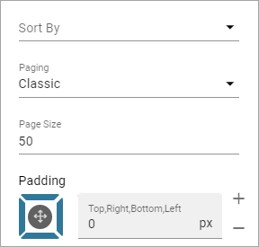
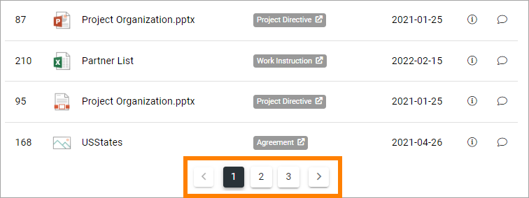
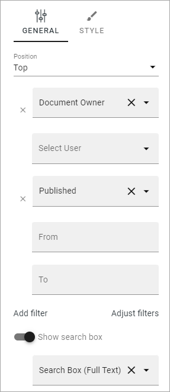
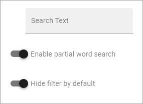
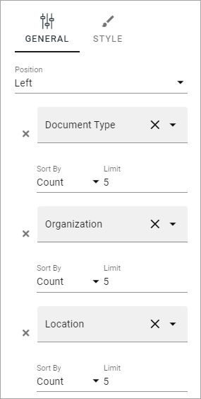

Document Rollup implementation example¶
Here you will find examples (only one for now) on how the Document Rollup block can be used.
Controlled Documents Rollup¶
Here’s an example of how it can look for users when a Document Rollup block is set up for Controlled Documents access:

The following settings are used:
General¶
In this example, the title is not set in the block. A text block is placed above the Document Rollup, to add the title.
Query¶
The following settings are used for Query:

Note the star (*) in the Query Field, meaning All (in this case Published Controlled Documents).
Display¶
For Display the following settings are used:

As you can see, there are six columns added, including the columns for the info icon and the feedback icon.
And these:
The “Classic” Paging results in a navigation at the bottom of the list:
Filter¶
The following filters are set up (General):
And these:
As “Hide filter by default” is selected, no filters are shown until the user clicks SHOW FILTER.
No settings are made for Filter Style.
Refiners¶
The following refiners are set up (shown to the left of the list):
And these:

(Only two of the refiners are shown in the image above, users have to scroll down to see the other two).
No settings are made for Refiner Style.